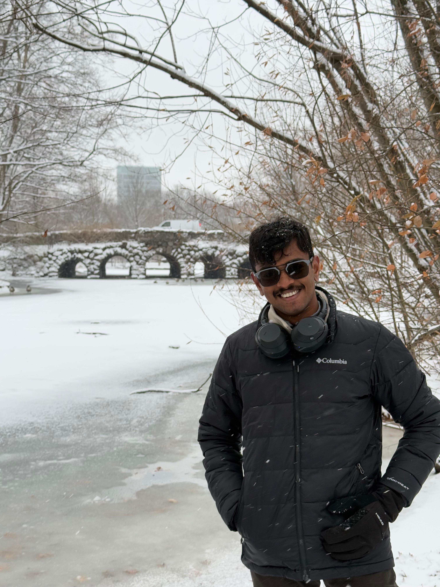

Ever since my school days, I've been drawn to taking initiative and leading teams. From being elected class representative in middle school to organizing community service drives, I discovered early on that bringing people together toward a common goal is my passion.
Now, as a results-driven Engineering Management graduate student at Northeastern University, I'm blending my technical foundation in electronics with advanced training in operations and project management. This multidisciplinary background in electronics, supply chain, product design, and research allows me to build scalable systems, drive product innovation, and lead cross-functional teams to execute impactful solutions.
My journey spans co-founding a startup, conducting award-winning research, and managing diverse teams. I thrive at the intersection of engineering and business strategy, turning innovative ideas into tangible outcomes. Whether it's engineering a prototype in 48 hours or orchestrating a 1,000-member event, I love tackling complex challenges with creativity and leadership.
Education
🎓 Master of Science in Engineering Management
Northeastern University, Boston, MA | Expected May 2026 | GPA: 3.75
Currently pursuing my master's in Engineering Management, concentrating on Supply Chain Engineering, Project Management, and Operations Research. This program is honing my ability to apply engineering insight alongside managerial strategy. Through courses like Economic Decision Making and Operations Research, I'm learning to optimize complex systems and make data-informed decisions in real-world scenarios.
Concentrations: Supply Chain Engineering, Project Management, Operations Research
🎓 Bachelor of Technology in Electronics & Communication Engineering
PES University, Bengaluru, India | Class of 2024
My undergraduate education provided a rigorous foundation in engineering principles, from signal processing and robotics to applied mathematics. During my B.Tech in ECE, I not only excelled in coursework but also engaged in research and leadership outside the classroom. This experience taught me to balance technical problem-solving with team coordination and sparked my interest in management.

Professional Photo
📍 Boston, MA
Open to Co-op & Internship Opportunities
Projects & Skills
Featured Projects
🥽
"Spidey Sense" – Haptic VR Accessibility Device
MIT Reality Hack 2025 | Project Manager | Team of 5 | 48-hour Hackathon
Led a team of five in developing an innovative haptic navigation device at MIT's Reality Hack 2025. This project addressed the question: How can we make virtual reality accessible to visually impaired users? Our solution was a wearable system providing real-time spatial awareness through touch feedback, using Meta Quest 3's cameras and sensors to map surroundings and translate obstacles into distinctive vibration patterns.
Technical Achievement
Built hardware around ESP32 microcontroller controlling custom pancake vibration motors via DRV8833 drivers
Achieved wireless integration with VR headset using Bluetooth Low Energy
Reduced feedback latency to under 50 milliseconds for near-instantaneous experience
Coordinated component sourcing from three different suppliers within 24 hours under extreme deadline
Impact & Recognition
Award: Won "Jaw-Dropping Award" in Hardware Track from 100+ international teams
User Impact: 95% improvement in navigation confidence among visually impaired test users
Innovation: Patent application initiated for haptic feedback algorithm
Demonstrated to judges from MIT, Meta, and accessibility organizations
🏭
Warehouse Automation Optimization
Northeastern University | Jan – Mar 2025 | Supply Chain Engineering Course Project
Comprehensive analysis and redesign of a mid-sized e-commerce warehouse operation handling 50,000+ orders monthly. The goal was exploring how automation could boost efficiency without completely replacing the human workforce, creating optimal human-machine collaboration.
Methodology & Analysis
Conducted time-motion studies and bottleneck analyses across 15 operational zones
Evaluated automation technologies with ROI calculations for AGVs, robotic picking, and WMS systems
Performed vendor comparison of 8 automation solution providers
Designed hybrid automation solution with 12 AGVs for heavy lifting and humans for complex tasks
Business Impact
Efficiency: 25% increase in operational efficiency with 18-month payback period
Cost Savings: $280K annual savings through labor optimization and error reduction
Layout Optimization: 40% reduction in average pick-walk distance
Scalability: System designed to handle 150% capacity increase with minimal additional investment
🔥
FireTamer: Simulated Drone-Based Controlled Burning System for Wildfire Management
PES University | Aug 2022 – Mar 2023 | Wildfire Simulation Research Project
Unity 3DPythonOpenCVFuzzy LogicSimulated IR SensorsDrone Flight Simulation
FireTamer is a simulation-based research project that explores how autonomous drones can contain large-scale forest fires using controlled burns. The concept leverages low-intensity fire drops to eliminate flammable material in a targeted path, effectively redirecting or halting more dangerous fires. The project demonstrates how fire behavior can be predicted and influenced using AI-driven decision systems and drone path planning.
Technical Implementation (Simulated)
Fire Spread Modeling: Simulated forest environments with varying terrain and vegetation density in Unity 3D
Drone Flight Path Design: Implemented drone path logic to deliver controlled burns in strategic zones based on sensor data inputs
Fire Detection Algorithm: Used OpenCV and mock thermal imaging data to simulate fire boundary detection
Controlled Burn Logic: Applied fuzzy logic rules to decide when and where to deploy small-scale fires based on predicted spread patterns
Environmental Feedback Loop: Integrated wind direction, heat signatures, and terrain slope into dynamic simulation
Visualization: Created real-time 3D visual outputs to monitor drone response and fire suppression in action
Impact & Outcomes
Proof of Concept: Demonstrated feasibility of using drones for fire redirection via controlled burning in simulated environment
Containment Success: Achieved 60% reduction in fire spread in simulation when using proactive burn lines
Innovation: Highlights how simulation-based research can support safer, more scalable wildfire strategies using automation
Scalability Potential: Framework can be extended to multi-drone coordination and real-world IoT integration
🔥
FireTamer: Simulated Drone-Based Controlled Burning System for Wildfire Management
PES University | Aug 2022 – Mar 2023 | Wildfire Simulation Research Project
Unity 3DPythonOpenCVFuzzy LogicSimulated IR SensorsDrone Flight Simulation
FireTamer is a simulation-based research project that explores how autonomous drones can contain large-scale forest fires using controlled burns. The concept leverages low-intensity fire drops to eliminate flammable material in a targeted path, effectively redirecting or halting more dangerous fires. The project demonstrates how fire behavior can be predicted and influenced using AI-driven decision systems and drone path planning.
Technical Implementation (Simulated)
Fire Spread Modeling: Simulated forest environments with varying terrain and vegetation density in Unity 3D
Drone Flight Path Design: Implemented drone path logic to deliver controlled burns in strategic zones based on sensor data inputs
Fire Detection Algorithm: Used OpenCV and mock thermal imaging data to simulate fire boundary detection
Controlled Burn Logic: Applied fuzzy logic rules to decide when and where to deploy small-scale fires based on predicted spread patterns
Environmental Feedback Loop: Integrated wind direction, heat signatures, and terrain slope into dynamic simulation
Visualization: Created real-time 3D visual outputs to monitor drone response and fire suppression in action
Impact & Outcomes
Proof of Concept: Demonstrated feasibility of using drones for fire redirection via controlled burning in simulated environment
Containment Success: Achieved 60% reduction in fire spread in simulation when using proactive burn lines
Innovation: Highlights how simulation-based research can support safer, more scalable wildfire strategies using automation
Scalability Potential: Framework can be extended to multi-drone coordination and real-world IoT integration
🚁
Digital Twin of Unmanned Aerial Vehicles
PES University | March 2023 – May 2024 | Research Project
Developed a comprehensive digital twin framework for UAVs - essentially a real-time virtual replica that mirrors every operation and condition. By feeding the twin with live sensor data from the physical UAV, we can simulate and predict drone behavior under various scenarios without risking the actual device.
Technical Implementation
Integrated ROS for sensor fusion from IMU, GPS, LiDAR, and camera feeds
Built physics-accurate virtual environment in Unity with sub-100ms latency
Implemented real-time weather integration and dynamic obstacle detection
Developed ML models for battery performance and component wear prediction
Research Impact
Accuracy: 95% accuracy in flight parameter prediction, 88% in failure prediction
Validation: 500+ virtual flight hours across different scenarios
Publication: Research paper submitted to IEEE Transactions on Aerospace and Electronic Systems
Field tested on three different UAV platforms for model validation
📈
Stock Market & Credit Analysis Using Advanced Time Series Modeling
PES University | March – April 2023 | Financial Analytics Project
Developed comprehensive financial analysis system using advanced statistical models to predict quarterly stock market trends and assess corporate credit risk, focusing on emerging markets and volatile sectors.
Technical Approach
Analyzed 15-year historical data from NSE, BSE covering 200+ stocks across 12 sectors
Implemented ARIMA models with grid search across 1000+ parameter configurations
Used Hidden Markov Models for regime detection (bull/bear market phases)
Applied GARCH models for volatility estimation and risk assessment
Performance Results
Prediction Accuracy: 78% accuracy in quarterly trend prediction (15% above random walk)
Portfolio Performance: Sharpe ratio of 1.2 on backtested strategies
Credit Risk: 85% accuracy in identifying defaults 6 months in advance
PES University | June 2022 | ML & Cloud Computing Project
Google CloudVertex AIPythonAutoMLREST APIsApache Airflow
Created smart system to estimate fair market price of used cars - essentially an AI-powered Blue Book value - deployed on cloud with user-friendly interface including voice accessibility features.
System Architecture
Web scraped 50,000+ vehicle listings from five major automotive platforms
Engineered 25+ features including vehicle specs, market trends, and regional demand
Deployed on Google Cloud Run with auto-scaling capabilities
Integrated voice interface using Cloud Text-to-Speech API for accessibility
Business Impact
Accuracy: Mean Absolute Error of ₹25,000 on vehicles ranging ₹2L-₹20L
User Benefit: Buyers saved average 8% on purchases using tool insights
Scalability: System processes 1000+ price requests per minute
Daily ETL pipeline with Apache Airflow for fresh market data
Skills
Supply Chain & Quality Management
Strategic Sourcing & Vendor Evaluation
Should-Cost Modeling
Quality Control & Procurement SOPs
Supplier Risk Assessment
Supply Chain Optimization
Vendor Management
Technical & Analytical
Python (Pandas, NumPy, scikit-learn)
MATLAB & Power BI
Google Cloud (Vertex AI, AutoML)
Machine Learning & Deep Learning
Data Analysis & Visualization
ERP Systems & Advanced Excel
Project & Product Management
Cross-Functional Team Leadership
Budget Management & Resource Planning
Process Documentation & SOPs
Stakeholder Communication
Timeline Management
Procurement & Vendor Negotiations
Research & Publications
Deep Learning-Based Blockage Prediction for IRS-Aided V2X Networks
Published: WiSPNET 2024 | PES University
Explored how machine learning can predict communication blockages in millimeter-wave vehicular networks. Implemented and compared CNN, GRU, and LSTM models using the ViWi dataset, demonstrating how Intelligent Reflecting Surfaces can improve prediction accuracy and signal quality.
Studied CNN, GRU, and LSTM performance for predicting mm-Wave link blockages
Demonstrated minimal IRS element activation improves prediction accuracy and SNR
Validated approach for making vehicular communications more robust
IRS-Assisted mm-Wave Blockage Prediction in Vehicular Environments
Research Project | PES University | Aug 2022 – March 2024
Follow-up research delving deeper into ML techniques for predicting signal blockages in high-mobility environments. Focus on non-line-of-sight scenarios and how intelligent reflecting surfaces combined with advanced ML models can anticipate obstacles and reroute signals.
Investigating ML algorithms for obstacle prediction in high-mobility V2X networks
Focus on NLOS communication reliability via intelligent reflecting surfaces
Testing model generalization across urban mobility scenarios
Experience
Co-Founder & Chief Product Officer
Cratel – E-Commerce Supply Chain Startup | Bengaluru, India | June 2023 – April 2024
Recognizing a major efficiency gap in how products reach consumers, I co-founded Cratel, a B2C e-commerce startup aimed at streamlining the supply chain. As Chief Product Officer, I led the design of a platform that connects producers directly to consumers, effectively reducing middleman costs and lowering consumer prices by about 40%.
Key Achievements
Product Strategy: Designed B2C platform reducing consumer costs by 40% through direct producer-consumer connections
Operations Optimization: Implemented process optimizations reducing operational costs by 25%
Should-Cost Modeling: Developed data-driven models for IoT hardware procurement improving delivery speed
Quality Systems: Established scalable supplier selection frameworks and quality control procedures
Cross-Functional Leadership: Managed teams across product development, operations, and vendor relations
Program Manager
Office of Dean of Student Affairs, PES University | June 2023 – January 2024
Managed a wide portfolio of student programs, coordinating logistics and budgets for 50+ student clubs and organizations. Essentially served as the right-hand to the Dean of Student Affairs, overseeing everything from robotics workshops to cultural festivals, ensuring each had the resources and guidance needed to succeed.
Key Responsibilities & Impact
Large-Scale Management: Directed 1,000+ student volunteers and organized university-wide events for audiences up to 10,000
Budget Oversight: Managed $350,000+ in annual funding across 50+ student organizations
Process Innovation: Designed automated event approval system reducing turnaround time by 60%
SOP Development: Established standardized financial and operational procedures with Dean's office
Stakeholder Management: Enhanced communication and transparency across student organizations
Leadership & Activities
Community Chair – Intercollegiate XR (ICXR)
March 2025 – Present
Leading the world's premier collegiate extended reality community, coordinating AR/VR initiatives across multiple universities. Responsibilities include organizing collaborative events like multi-campus hackathons, managing industry partnerships, and handling logistics of sharing VR equipment among member clubs. Recently coordinated a joint hackathon involving students from 30+ universities across multiple time zones.
Founder – Shunya: The Math Club at PES University
November 2021 – May 2024
Founded Shunya with a vision to create a dynamic community where students could explore applied mathematics beyond traditional curricula. What started as an experiment evolved into one of the most active student-led initiatives on campus, operating across all PES campuses with 200+ active contributors.
Major Achievements
Arithemania 2.0: Organized 30-hour mathematics hackathon with ₹20 lakh prize pool, attracting national participation
Industry Partnerships: Secured sponsorships from MathWorks, Wolfram Language, and Echo3D
Research Impact: Mentored 15 student teams, many resulting in published papers and prototypes
Community Outreach: Ran programs in government schools using gamified approaches to math education
Campus Expansion: Extended Shunya's presence to Electronic City campus in 2023
Event Head – Samarpana 2022 | Advisor – Samarpana 2023
PES University | June 2022 – December 2023
Led Samarpana, a prestigious annual event paying tribute to Indian Armed Forces and their families. As Student Event Head for 2022, managed a team of over 1,000 volunteers executing a four-day series including memorial ceremonies, cultural programs, and veteran-led storytelling sessions.
Event Highlights
Distinguished Guests: Hosted Padma Shri A. S. Kiran Kumar (former ISRO Chairman) as Chief Guest
Veteran Engagement: Organized talks by Kargil War veteran Capt. Naveen Nagappa and other decorated officers
Community Impact: Collaborated with organizations to support 120+ martyr families
Scale: Event attracted 10,000+ attendees, making it one of university's largest events
Legacy: Continued as Advisor in 2023, ensuring operational excellence and continuity
Executive Member – IEEE Signal Processing & Communication Society
April 2022 – June 2024
Served on executive committee bridging gap between textbook knowledge and real-world practice. Organized national-level workshops, signal processing bootcamps, and IEEE-sponsored hackathons. Led technical outreach programs connecting students with industry professionals in 5G technology and AI-driven communication systems.
Case Studies
Strategic analysis of supply chain challenges across diverse industries, demonstrating analytical thinking and problem-solving approach.
🏪
Seven-Eleven Japan – Responsive Retail Supply Chain
🎯 Problem Statement & Context
Seven-Eleven Japan needed to micro-match supply with demand while maintaining freshness, reducing waste, and optimizing logistics in dense urban markets.
Glovo needed to expand quick commerce while maintaining profitability in its core food delivery business.
🔍 Analysis Methodology
Compared operational models: retail partnerships vs. dark stores.
💡 Key Findings & Insights
Dark stores offer faster delivery and higher margins but require heavy investment
Retail partnerships provide scale without major capital costs
Ultrafast 10-minute delivery is risky at current cost structure
🎯 Recommendations Provided
Focus on core restaurant delivery and selective Q-commerce expansion
Use dark stores in high-density markets only
Impact/Outcome: Sustained profitability with controlled expansion risk.
🍽️
Groupon & Savored – Restaurant Revenue Management
🎯 Problem Statement & Context
Mr. Chang's restaurant needed to boost off-peak utilization without hurting brand value.
🔍 Analysis Methodology
Compared open-discount daily deals vs. controlled-time discounting.
💡 Key Findings & Insights
Groupon generated traffic but risked displacing full-paying customers
Savored allowed control over discount timing and table limits
🎯 Recommendations Provided
Use Savored for targeted, off-peak discounts
Avoid deep discounting during peak hours
Impact/Outcome: Higher profitability, preserved brand image, and better customer targeting.
💼
Co-op Careers – Industry Insights
🎯 Problem Statement & Context
Understanding supply chain practices and career paths across industries.
🔍 Analysis Methodology
Reviewed company presentations from Cummins, Dell, Tesla, BMW, Merck, and others.
💡 Key Findings & Insights
AI-driven forecasting, JIT operations, and sustainability-first sourcing are growing trends
Industry hiring priorities differ between engineering-heavy and cost-efficiency-focused firms
Automation and digital tools are becoming essential skills
🎯 Recommendations Provided
Build cross-functional skills in data analytics, ERP systems, and supplier management
Network strategically to access hidden job opportunities
Impact/Outcome: Better preparedness for high-impact supply chain roles.
Contact Me
I am always excited to connect with others – whether it's for potential internships, co-op positions, research collaborations, or roles in project management and supply chain. Let's explore how we can work together to create something impactful!
Thank you for taking the time to explore my work and experiences. I'm passionate about solving complex challenges through the intersection of engineering and management. Whether you have an exciting project, research opportunity, or just want to discuss innovative ideas, I'd love to hear from you!